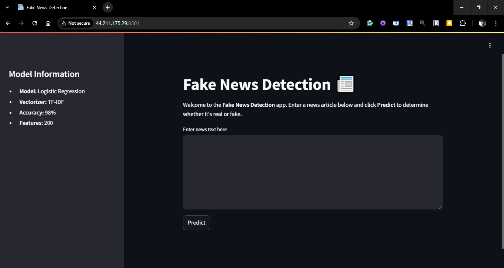
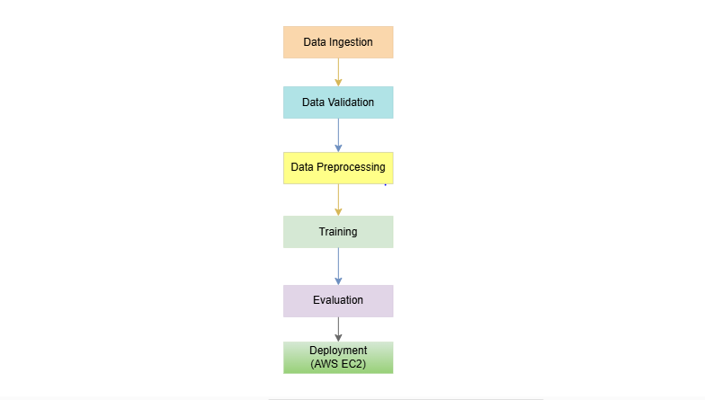

End-to-end Fake News Detection
This project is an end-to-end fake news detection system. It involves several stages, including data ingestion, data validation, data preprocessing, model training, and evaluation. The project is implemented in Python and uses various machine learning techniques to classify news articles as real or fake.

Key Features
- Deployed on AWS EC2
- Achieved 98% acccuracy
- Automated CI/CD pipeline with Github Action
- Real-time inference capabilities
- Highly flexible desing, can be extended easily
Challenge
The primary challenges in this project were the limitations of computational resources and the acquisition of high-quality data. Limited resources required the development of efficient algorithms that could perform well without extensive processing power. Additionally, obtaining reliable and diverse datasets was crucial for the model to accurately detect fake news across various sources.
Solution
To address these challenges, vectorization techniques were employed to reduce the dimensionality of the data while maintaining high performance. By efficiently representing textual data in lower dimensions, the computational requirements were minimized without compromising the model's accuracy. This approach allowed for effective processing within resource constraints and enhanced the overall performance of the fake news detection system.
Technical Implementation
The overall project lifecycle is divided into six key steps, Data ingestion, Data validation, Data preprocessing, Model Training, Evaluation and Deloyment on aws through CI/CD pipelines
Technologies Used
🛠️ Core & Backend
Python Streamlit🧠 Machine Learning
scikit-learn NLTK📦 Contarization & Experiment Tracking
Docker🔍 Pipeline Tracking
DVC🔧 Version control and CI/CD
Git Github Actions☁️ Cloud & Deployment
Docker AWS EC2 AWS ECRSystem Architecture
1. Data Ingestion
- Data collection from Kaggle
- Implementation of data version control using DVC
2. Data validation
- Pipeline to check the format and data types of column in dataset
- Completely Automated
3. Model Training
- Logistic Regression
- Hyperparameter tuning for high recall
4. Evaluation
- metrics tracking, accuracy and high recall
- Test accuracy 98%
5. Deployment
- Containerization using Docker
- Automated CI/CD pipeline with GitHub Actions
- AWS EC2 deployment with auto-scaling
Results & Impact
- 98% classification accuracy on test dataset
- Successfully deployed in AWS EC2